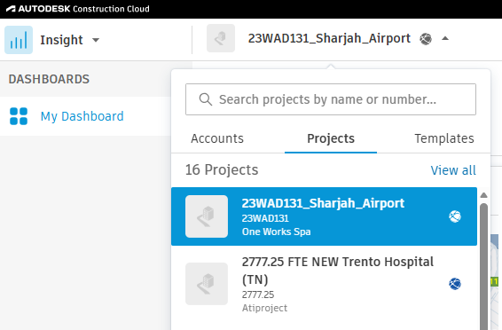
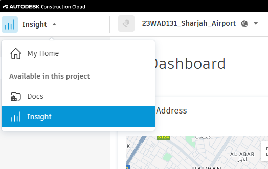

General
UploadToAcc - Guía de uso
Tabla de contenidos
Descripción
El comando UploadToAcc carga modelos locales de Revit en Autodesk Construction Cloud (ACC) por lotes, sin necesidad de abrir cada modelo manualmente.
Cómo obtener las URL necesarias de ACC
Para cargar modelos, proporciona dos URL desde la interfaz web de ACC:
1. URL de cuenta + proyecto
Pasos:
- Abre https://acc.autodesk.com/insight en el navegador
- Se te redirigirá automáticamente a uno de tus proyectos
-
Busca el menú desplegable para seleccionar el proyecto en la parte superior de la página
-
Selecciona el proyecto necesario
- Copia la URL de la barra de direcciones del navegador
Formato de la URL:
https://acc.autodesk.com/insight/accounts/{accountId}/projects/{projectId}/my-dashboard
https://acc.autodesk.com/insight/accounts/11111111-1111-1111-1111-111111111111/projects/22222222-2222-2222-2222-222222222222/my-dashboard

2. URL de proyecto + carpeta
Pasos:
- En el mismo proyecto, cambia de Insight a Docs
- Utiliza el selector situado en la esquina superior izquierda de la página
-
Se abrirá la estructura de archivos del proyecto
-
Ve a la carpeta donde quieres cargar los modelos
- Copia la URL de la barra de direcciones del navegador
Formato de la URL:
https://acc.autodesk.com/docs/files/projects/{projectId}?folderUrn={folderId}
https://acc.autodesk.com/docs/files/projects/22222222-2222-2222-2222-222222222222?folderUrn={folderId}

Proceso de carga
- Seleccionar archivos
- Haz clic en el botón “Select files…”
- Selecciona uno o varios archivos
.rvt
- Introducir las URL
- Pega la primera URL (Cuenta + Proyecto) en el campo “Account + Project URL”
- Pega la segunda URL (Proyecto + Carpeta) en el campo “Project + Folder URL”
- Etiqueta (opcional)
- Se genera automáticamente un nombre único para este par de URL
- Puedes cambiarlo para identificarlo más fácilmente. Se recomienda el formato NombreCortoDelProyecto NombreDeLaCarpeta.
- Utiliza el botón “History…” para seleccionar URL utilizadas anteriormente
- Cargar
- Haz clic en el botón “Upload”
- Se mostrarán el progreso y el tiempo transcurrido para cada archivo
- Cuando finalice el proceso, aparecerá un diálogo con los resultados
Notas importantes
- Worksharing: Si el modelo no utiliza worksharing, la herramienta activará esta función automáticamente antes de cargarlo
- Tiempo de carga: Ten paciencia: incluso un proyecto vacío (300 KB) tarda entre 20 y 30 segundos en cargarse. Los modelos reales pueden tardar bastante más.
- Historial: Los pares de URL se guardan automáticamente en el historial para volver a utilizarlos
- Cancelación: El proceso se puede cancelar con el botón “Cancel” de la barra de progreso. El archivo actual terminará de cargarse, pero los siguientes archivos no se procesarán.
Solución de problemas
Si se producen errores:
- Comprueba que has iniciado sesión en tu cuenta en Revit
- Verifica que las URL se han copiado completas, sin truncamientos
- Utiliza el botón “Open Log” para consultar los registros detallados
- Comprueba que tienes permisos para cargar archivos en la carpeta de proyecto seleccionada
- Comprueba que los archivos no sean vínculos en los documentos abiertos actualmente